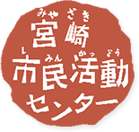

私たちは宮崎市民の市民活動・ボランティアを支援します。
開館時間 9:00 ～ 22:00
0985-20-8777
お問合せ
アクセス
HOME
センター案内
市民活動センターとは
施設のご案内
各種書式
市民活動団体
市民活動団体とは
登録について
団体を探したい
ボランティア
ボランティアをしたい
ボランティアを
募集したい
Q & A
センターについて
市民活動について
ボランティア募集・イベント情報
HOME
ボランティア募集・イベント情報
絞り込み検索
カテゴリー
全て
ボランティア
イベント
会員募集
活動分野
全て
保健・医療
高齢者福祉
障がい者福祉
児童福祉
社会教育
まちづくり
観光
農山漁村
文化芸術
環境保全
災害救助
地域安全
人権・平和
国際協力
男女共同
子共教育
科学技術
情報社会
経済活性
職業・雇用
消費者保護
NPO支援
その他
キーワード
検 索
ボランティア
2018/08/18 ～ 8/19
その他
new
まつり宮崎2018 ボランティア募集のお知らせ
イベント
2018/08/18 ～ 8/19
保健・医療
new
腎臓移植 ドナー＆レシピエントの広場
会員募集
2018/08/18 ～ 8/19
宮崎市民活動センター
イベント
2018/08/18 ～ 8/19
子供育成
ボランティア養成講座
ボランティア
2018/08/18 ～ 8/19
文化・芸術
第10回鬼の洗濯岩アクアスロン
イベント
2018/08/18 ～ 8/19
保健・医療
田植え体験
ボランティア
2018/08/18 ～ 8/19
保健・医療
病院でのボランティア募集(K-10)
会員募集
2018/08/18 ～ 8/19
特定非営利活動法人 未来生き方研究会
ボランティア
2018/08/18 ～ 8/19
科学技術
宮崎科学技術館 運営ボランティア(K-18)
イベント
2018/08/18 ～ 8/19
職業・雇用
2級キャリアコンサルティング技能検定 合格対策講座
ボランティア
2018/08/18 ～ 8/19
障害者福祉
障がい児・者の学童保育、日中一時支援の補助(K-4)
会員募集
2018/08/18 ～ 8/19
特定非営利活動法人 えんキャリア宮崎
イベント
2018/08/18 ～ 8/19
保健・医療
初級手話講習会募集のお知らせ
会員募集
2018/08/18 ～ 8/19
宮崎レコード音楽愛好会
ボランティア
2018/08/18 ～ 8/19
環境保全
森づくりボランティア(K-23)
ボランティア
2018/08/18 ～ 8/19
保健・医療
障がい児・者の学童保育、日中一時支援の補助(K-4)
会員募集
2018/08/18 ～ 8/19
宮崎あやとり同好会
イベント
2018/08/18 ～ 8/19
保健・医療
初級手話講習会募集のお知らせ
ボランティア
2018/08/18 ～ 8/19
環境保全
森づくりボランティア(K-23)
会員募集
2018/08/18 ～ 8/19
特定非営利活動法人 未来生き方研究会
イベント
2018/08/18 ～ 8/19
男女共同
意見交換会「LGBT（わたしたち）が動けば宮崎（まち）が変わる」
ボランティア
2018/08/18 ～ 8/19
高齢者福祉
利用者との談話等のお相手(K-13)
ボランティア
常時募集
障害者福祉
ホースセラピーのボランティア募集（K-24）
ボランティア
通年 又は イベント時（講演会当日）
児童福祉
円ブリオ基金の募集箱、ＳＯＳポスター（カード）の設置等（K-25
イベント
毎週木曜日11：00～12：00
国際協力
英会話を話、あなたも国際人をめざそう！
会員募集
常時募集
PAW junior club
イベント
12月10日（金）１１：３０～１２：３０まで
社会教育
友愛セールをいたします
前のページ
1
2
3
4
5
次のページ